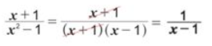
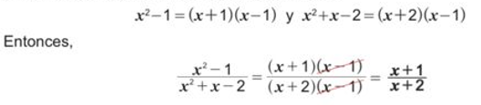

Simplifique las siguientes fracciones algebraicas:
- a) (X + 1) / (X² - 1)
- b) (X² - 1) / (X² + X - 2)
a) Se examina el numerador y denominador para saber si son factorizables. En este caso x+1 no es factorizable, pero X² - 1, se factoriza como X² - 1 = (x+1)(x-1).
b) El numerador y denominador son factorizables:
Para la simplificación de fracciones algebraicas cuyo numerador y denominador son polinomios se realiza lo siguiente:
- 1. Se factoriza el numerador y el denominador de la fracción algebraica, si es posible
- 2. Se simplifican todos los factores comunes del numerador y denominador, los términos restantes forman la nueva fracción algebraica, que es reducida.
Ejercicios
Simplifique las siguientes fracciones algebraicas:
- a) (X + 2)/ (X²- 4)
- b) (X - 3) / (X² - 9)
- c) (X² + 3X + 2) / (X + 2)
- d) (X² - 4) / (X² + X - 6)
- e) (X² - X -2) / (X² - 1)
- f) (X² -3X) / (X² -4X + 3)
- g) (X² + 4X) / (X² + 8X + 16)
- h) (3X - 3) / (X² - 1)